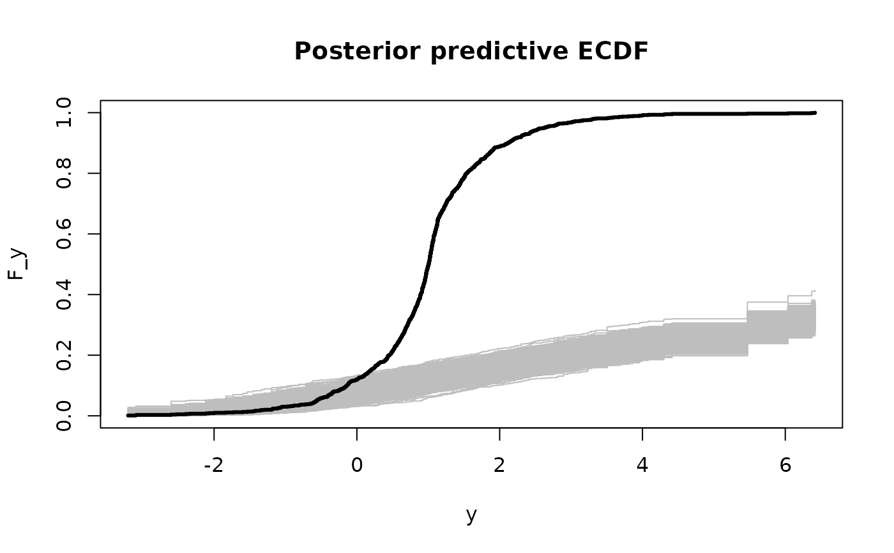

MCMC sampling for Bayesian quantile regression. An asymmetric Laplace distribution is assumed for the errors, so the regression models targets the specified quantile. A g-prior is assumed for the regression coefficients.
Usage
bqr(
y,
X,
tau = 0.5,
X_test = X,
psi = length(y),
nsave = 1000,
nburn = 1000,
nskip = 0,
verbose = TRUE
)Arguments
- y
n x 1vector of observed counts- X
n x pmatrix of predictors- tau
the target quantile (between zero and one)
- X_test
n_test x pmatrix of predictors for test data; default is the observed covariatesX- psi
prior variance (g-prior)
- nsave
number of MCMC iterations to save
- nburn
number of MCMC iterations to discard
- nskip
number of MCMC iterations to skip between saving iterations, i.e., save every (nskip + 1)th draw
- verbose
logical; if TRUE, print time remaining
Value
a list with the following elements:
coefficientsthe posterior mean of the regression coefficientsfitted.valuesthe estimatedtauth quantile at test pointsX_testpost_theta:nsave x psamples from the posterior distribution of the regression coefficientspost_ytilde:nsave x n_testsamples from the posterior predictive distribution at test pointsX_testmodel: the model fit (here,bqr)
as well as the arguments passed
Note
The asymmetric Laplace distribution is advantageous because
it links the regression model (X%*%theta) to a pre-specified
quantile (tau). However, it is often a poor model for
observed data, and the semiparametric version sbqr is
recommended in general.
Examples
# Simulate some heteroskedastic data (no transformation):
dat = simulate_tlm(n = 200, p = 10, g_type = 'box-cox', heterosked = TRUE, lambda = 1)
y = dat$y; X = dat$X # training data
y_test = dat$y_test; X_test = dat$X_test # testing data
# Target this quantile:
tau = 0.05
# Fit the Bayesian quantile regression model:
fit = bqr(y = y, X = X, tau = tau, X_test = X_test)
#> [1] "1 seconds remaining"
#> [1] "Total time: 1 seconds"
names(fit) # what is returned
#> [1] "coefficients" "fitted.values" "post_theta" "post_ytilde"
#> [5] "model" "y" "X" "X_test"
#> [9] "psi" "tau"
# Posterior predictive checks on testing data: empirical CDF
y0 = sort(unique(y_test))
plot(y0, y0, type='n', ylim = c(0,1),
xlab='y', ylab='F_y', main = 'Posterior predictive ECDF')
temp = sapply(1:nrow(fit$post_ytilde), function(s)
lines(y0, ecdf(fit$post_ytilde[s,])(y0), # ECDF of posterior predictive draws
col='gray', type ='s'))
lines(y0, ecdf(y_test)(y0), # ECDF of testing data
col='black', type = 's', lwd = 3)

# The posterior predictive checks usually do not pass!
# try ?sbqr instead...